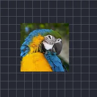

रैंडम डिस्प्लेसमेंट

लेयर को समय के साथ अपने आप स्मूद लेकिन रैंडम तरीके से हिलाता है। सीड से अलग मूवमेंट चुनी जाती है, स्पीड से तय होता है कि यह कितनी तेज़ी से घूमता है और इवोल्यूशन से पैटर्न बदलता है।
रैंडम डिस्प्लेसमेंट लेयर को चिकने और बेतरतीब ढंग से घुमाता है, जैसे बहता हुआ कैमरा। मैग्निट्यूड यह तय करता है कि यह कितनी दूर तक भटकता है, स्पीड यह कि कितनी तेज़ी से, और सीड एक अलग पथ चुनता है। Auto-Shake के विपरीत, यह गति धीमी और प्रवाहमयी होती है, न कि झटकेदार।
सेटिंग्स
| सेटिंग | प्रकार | रेंज | डिफ़ॉल्ट |
|---|---|---|---|
| परिमाण | संख्या | 0 से 2000 | 50 |
| इवोल्यूशन | संख्या | 0 से 2000 | 0 |
| सीड | संख्या | 0 से 5 | 0 |
| स्कैटर | संख्या | 0% से 200% | 50% |
| स्पीड | संख्या | 0 से 50 | 1 |